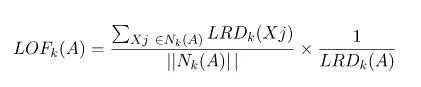
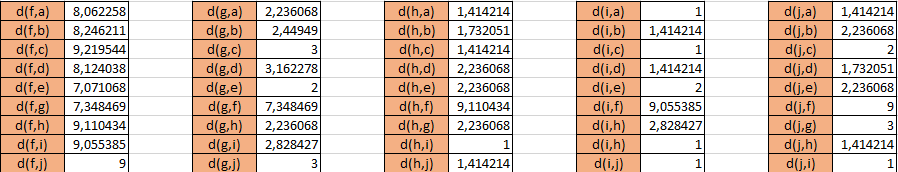

Penambangan Data ヽ(￣ω￣(￣ω￣〃)ゝ#
Iris Dataset (╬▔皿▔)╯#
Dataset iris merupakan dataset yang paling sering digunakan untuk uji coba pertama ketika belajar data mining. Dataset ini pertama kali diperkenalkan oleh ahli biologi Sir Ronald Fisher pada tahun 1936 sebagai contoh dalam analisis diskriminan linear. Ini terdiri dari data pengukuran dari tiga spesies iris (Iris setosa, Iris versicolor, dan Iris virginica). Setiap spesies diambil dari pulau Gugusan Kepulauan Guernsey dan Pantai Pasifik Amerika Serikat. Dataset ini sering digunakan untuk demonstrasi dalam klasifikasi dan clustering karena sifatnya yang relatif sederhana dan dapat dengan mudah dimengerti.
Data understanding (pemahaman data) adalah tahap awal dalam proses analisis data yang bertujuan untuk menggali wawasan tentang struktur, karakteristik, dan kualitas dataset yang akan digunakan.
Memahami Struktur data(/ω＼)#
!pip install mysql-connector-python
Collecting mysql-connector-python
Downloading mysql_connector_python-8.3.0-cp312-cp312-win_amd64.whl.metadata (2.0 kB)
Downloading mysql_connector_python-8.3.0-cp312-cp312-win_amd64.whl (15.4 MB)
---------------------------------------- 0.0/15.4 MB ? eta -:--:--
---------------------------------------- 0.0/15.4 MB ? eta -:--:--
---------------------------------------- 0.0/15.4 MB 660.6 kB/s eta 0:00:24
---------------------------------------- 0.1/15.4 MB 930.9 kB/s eta 0:00:17
--------------------------------------- 0.2/15.4 MB 1.2 MB/s eta 0:00:13
--------------------------------------- 0.3/15.4 MB 1.3 MB/s eta 0:00:12
--------------------------------------- 0.4/15.4 MB 1.4 MB/s eta 0:00:11
--------------------------------------- 0.4/15.4 MB 1.4 MB/s eta 0:00:11
--------------------------------------- 0.4/15.4 MB 1.1 MB/s eta 0:00:14
- -------------------------------------- 0.4/15.4 MB 1.0 MB/s eta 0:00:15
- -------------------------------------- 0.5/15.4 MB 1.1 MB/s eta 0:00:14
- -------------------------------------- 0.5/15.4 MB 1.1 MB/s eta 0:00:14
- -------------------------------------- 0.6/15.4 MB 1.1 MB/s eta 0:00:14
- -------------------------------------- 0.7/15.4 MB 1.2 MB/s eta 0:00:13
- -------------------------------------- 0.7/15.4 MB 1.2 MB/s eta 0:00:13
-- ------------------------------------- 0.8/15.4 MB 1.2 MB/s eta 0:00:13
-- ------------------------------------- 0.9/15.4 MB 1.2 MB/s eta 0:00:12
-- ------------------------------------- 0.9/15.4 MB 1.3 MB/s eta 0:00:12
-- ------------------------------------- 1.0/15.4 MB 1.3 MB/s eta 0:00:12
-- ------------------------------------- 1.1/15.4 MB 1.3 MB/s eta 0:00:12
--- ------------------------------------ 1.2/15.4 MB 1.3 MB/s eta 0:00:11
--- ------------------------------------ 1.3/15.4 MB 1.3 MB/s eta 0:00:11
--- ------------------------------------ 1.4/15.4 MB 1.4 MB/s eta 0:00:11
--- ------------------------------------ 1.5/15.4 MB 1.4 MB/s eta 0:00:10
---- ----------------------------------- 1.6/15.4 MB 1.4 MB/s eta 0:00:10
---- ----------------------------------- 1.6/15.4 MB 1.4 MB/s eta 0:00:10
---- ----------------------------------- 1.8/15.4 MB 1.5 MB/s eta 0:00:10
---- ----------------------------------- 1.8/15.4 MB 1.5 MB/s eta 0:00:10
---- ----------------------------------- 1.9/15.4 MB 1.5 MB/s eta 0:00:10
----- ---------------------------------- 2.0/15.4 MB 1.5 MB/s eta 0:00:09
----- ---------------------------------- 2.1/15.4 MB 1.5 MB/s eta 0:00:09
----- ---------------------------------- 2.2/15.4 MB 1.5 MB/s eta 0:00:09
------ --------------------------------- 2.3/15.4 MB 1.6 MB/s eta 0:00:09
------ --------------------------------- 2.4/15.4 MB 1.6 MB/s eta 0:00:09
------ --------------------------------- 2.5/15.4 MB 1.6 MB/s eta 0:00:08
------ --------------------------------- 2.7/15.4 MB 1.6 MB/s eta 0:00:08
------- -------------------------------- 2.8/15.4 MB 1.7 MB/s eta 0:00:08
------- -------------------------------- 2.9/15.4 MB 1.7 MB/s eta 0:00:08
------- -------------------------------- 3.0/15.4 MB 1.7 MB/s eta 0:00:08
-------- ------------------------------- 3.1/15.4 MB 1.7 MB/s eta 0:00:08
-------- ------------------------------- 3.3/15.4 MB 1.8 MB/s eta 0:00:07
-------- ------------------------------- 3.4/15.4 MB 1.8 MB/s eta 0:00:07
--------- ------------------------------ 3.5/15.4 MB 1.8 MB/s eta 0:00:07
--------- ------------------------------ 3.6/15.4 MB 1.8 MB/s eta 0:00:07
--------- ------------------------------ 3.8/15.4 MB 1.9 MB/s eta 0:00:07
---------- ----------------------------- 3.9/15.4 MB 1.9 MB/s eta 0:00:07
---------- ----------------------------- 4.0/15.4 MB 1.9 MB/s eta 0:00:06
---------- ----------------------------- 4.2/15.4 MB 1.9 MB/s eta 0:00:06
----------- ---------------------------- 4.3/15.4 MB 2.0 MB/s eta 0:00:06
----------- ---------------------------- 4.5/15.4 MB 2.0 MB/s eta 0:00:06
------------ --------------------------- 4.6/15.4 MB 2.0 MB/s eta 0:00:06
------------ --------------------------- 4.8/15.4 MB 2.0 MB/s eta 0:00:06
------------ --------------------------- 4.9/15.4 MB 2.1 MB/s eta 0:00:06
------------- -------------------------- 5.1/15.4 MB 2.1 MB/s eta 0:00:05
------------- -------------------------- 5.3/15.4 MB 2.1 MB/s eta 0:00:05
-------------- ------------------------- 5.4/15.4 MB 2.1 MB/s eta 0:00:05
-------------- ------------------------- 5.6/15.4 MB 2.1 MB/s eta 0:00:05
-------------- ------------------------- 5.7/15.4 MB 2.2 MB/s eta 0:00:05
--------------- ------------------------ 5.8/15.4 MB 2.2 MB/s eta 0:00:05
--------------- ------------------------ 6.0/15.4 MB 2.2 MB/s eta 0:00:05
--------------- ------------------------ 6.1/15.4 MB 2.2 MB/s eta 0:00:05
---------------- ----------------------- 6.3/15.4 MB 2.2 MB/s eta 0:00:05
---------------- ----------------------- 6.5/15.4 MB 2.3 MB/s eta 0:00:04
----------------- ---------------------- 6.6/15.4 MB 2.3 MB/s eta 0:00:04
----------------- ---------------------- 6.8/15.4 MB 2.3 MB/s eta 0:00:04
------------------ --------------------- 7.0/15.4 MB 2.3 MB/s eta 0:00:04
------------------ --------------------- 7.2/15.4 MB 2.4 MB/s eta 0:00:04
------------------- -------------------- 7.4/15.4 MB 2.4 MB/s eta 0:00:04
------------------- -------------------- 7.6/15.4 MB 2.4 MB/s eta 0:00:04
-------------------- ------------------- 7.8/15.4 MB 2.4 MB/s eta 0:00:04
-------------------- ------------------- 8.0/15.4 MB 2.5 MB/s eta 0:00:04
--------------------- ------------------ 8.2/15.4 MB 2.5 MB/s eta 0:00:03
--------------------- ------------------ 8.3/15.4 MB 2.5 MB/s eta 0:00:03
---------------------- ----------------- 8.5/15.4 MB 2.5 MB/s eta 0:00:03
---------------------- ----------------- 8.5/15.4 MB 2.5 MB/s eta 0:00:03
---------------------- ----------------- 8.8/15.4 MB 2.5 MB/s eta 0:00:03
----------------------- ---------------- 8.9/15.4 MB 2.5 MB/s eta 0:00:03
----------------------- ---------------- 8.9/15.4 MB 2.5 MB/s eta 0:00:03
----------------------- ---------------- 9.1/15.4 MB 2.5 MB/s eta 0:00:03
----------------------- ---------------- 9.2/15.4 MB 2.5 MB/s eta 0:00:03
------------------------ --------------- 9.3/15.4 MB 2.5 MB/s eta 0:00:03
------------------------ --------------- 9.4/15.4 MB 2.5 MB/s eta 0:00:03
------------------------ --------------- 9.5/15.4 MB 2.5 MB/s eta 0:00:03
------------------------ --------------- 9.6/15.4 MB 2.5 MB/s eta 0:00:03
------------------------- -------------- 9.7/15.4 MB 2.5 MB/s eta 0:00:03
------------------------- -------------- 9.8/15.4 MB 2.5 MB/s eta 0:00:03
------------------------- -------------- 10.0/15.4 MB 2.5 MB/s eta 0:00:03
-------------------------- ------------- 10.1/15.4 MB 2.5 MB/s eta 0:00:03
-------------------------- ------------- 10.2/15.4 MB 2.5 MB/s eta 0:00:03
-------------------------- ------------- 10.2/15.4 MB 2.5 MB/s eta 0:00:03
-------------------------- ------------- 10.3/15.4 MB 2.5 MB/s eta 0:00:03
-------------------------- ------------- 10.4/15.4 MB 2.5 MB/s eta 0:00:02
--------------------------- ------------ 10.5/15.4 MB 2.5 MB/s eta 0:00:02
--------------------------- ------------ 10.6/15.4 MB 2.5 MB/s eta 0:00:02
--------------------------- ------------ 10.7/15.4 MB 2.6 MB/s eta 0:00:02
--------------------------- ------------ 10.8/15.4 MB 2.6 MB/s eta 0:00:02
---------------------------- ----------- 10.9/15.4 MB 2.6 MB/s eta 0:00:02
---------------------------- ----------- 11.0/15.4 MB 2.6 MB/s eta 0:00:02
---------------------------- ----------- 11.1/15.4 MB 2.6 MB/s eta 0:00:02
---------------------------- ----------- 11.2/15.4 MB 2.7 MB/s eta 0:00:02
----------------------------- ---------- 11.3/15.4 MB 2.7 MB/s eta 0:00:02
----------------------------- ---------- 11.4/15.4 MB 2.7 MB/s eta 0:00:02
----------------------------- ---------- 11.5/15.4 MB 2.7 MB/s eta 0:00:02
------------------------------ --------- 11.6/15.4 MB 2.7 MB/s eta 0:00:02
------------------------------ --------- 11.7/15.4 MB 2.7 MB/s eta 0:00:02
------------------------------ --------- 11.8/15.4 MB 2.7 MB/s eta 0:00:02
------------------------------- -------- 12.0/15.4 MB 2.7 MB/s eta 0:00:02
------------------------------- -------- 12.1/15.4 MB 2.8 MB/s eta 0:00:02
------------------------------- -------- 12.2/15.4 MB 2.8 MB/s eta 0:00:02
------------------------------- -------- 12.3/15.4 MB 2.8 MB/s eta 0:00:02
-------------------------------- ------- 12.5/15.4 MB 2.8 MB/s eta 0:00:02
-------------------------------- ------- 12.6/15.4 MB 2.8 MB/s eta 0:00:02
-------------------------------- ------- 12.7/15.4 MB 2.8 MB/s eta 0:00:01
--------------------------------- ------ 12.8/15.4 MB 2.8 MB/s eta 0:00:01
--------------------------------- ------ 13.0/15.4 MB 2.8 MB/s eta 0:00:01
--------------------------------- ------ 13.1/15.4 MB 2.8 MB/s eta 0:00:01
---------------------------------- ----- 13.2/15.4 MB 2.8 MB/s eta 0:00:01
---------------------------------- ----- 13.4/15.4 MB 2.8 MB/s eta 0:00:01
---------------------------------- ----- 13.5/15.4 MB 2.8 MB/s eta 0:00:01
----------------------------------- ---- 13.6/15.4 MB 2.8 MB/s eta 0:00:01
----------------------------------- ---- 13.8/15.4 MB 2.8 MB/s eta 0:00:01
------------------------------------ --- 13.9/15.4 MB 2.8 MB/s eta 0:00:01
------------------------------------ --- 14.1/15.4 MB 2.8 MB/s eta 0:00:01
------------------------------------ --- 14.2/15.4 MB 2.8 MB/s eta 0:00:01
------------------------------------- -- 14.4/15.4 MB 2.8 MB/s eta 0:00:01
------------------------------------- -- 14.6/15.4 MB 2.8 MB/s eta 0:00:01
-------------------------------------- - 14.7/15.4 MB 2.9 MB/s eta 0:00:01
-------------------------------------- - 14.9/15.4 MB 2.9 MB/s eta 0:00:01
--------------------------------------- 15.1/15.4 MB 2.9 MB/s eta 0:00:01
--------------------------------------- 15.2/15.4 MB 2.9 MB/s eta 0:00:01
--------------------------------------- 15.4/15.4 MB 2.9 MB/s eta 0:00:01
---------------------------------------- 15.4/15.4 MB 2.8 MB/s eta 0:00:00
Installing collected packages: mysql-connector-python
Successfully installed mysql-connector-python-8.3.0
import mysql.connector
import pandas as pd
# koneksi ke aiven
hostname = 'dataminingsql-andre22113.a.aivencloud.com'
port = 11285
username = 'avnadmin'
password = 'AVNS_I4jfkDFxPpr5j8J6QVT'
database = 'defaultdb'
conn = mysql.connector.connect(
host=hostname,
port=port,
user=username,
password=password,
database=database
)
# Membaca data dari database menggunakan Pandas
query = "SELECT * FROM Data_Awal_iris"
dataset = pd.read_sql(query, conn)
# Menutup koneksi ke database
conn.close()
---------------------------------------------------------------------------
ModuleNotFoundError Traceback (most recent call last)
Cell In[2], line 2
1 import mysql.connector
----> 2 import pandas as pd
4 # koneksi ke aiven
5 hostname = 'dataminingsql-andre22113.a.aivencloud.com'
ModuleNotFoundError: No module named 'pandas'
Berikut Code untuk mengetahui jumlah baris dan kolom pada data menggunakan python
dataset.shape
(150, 6)
Dapat dilihat bahwa Iris Dataset memiliki jumlah baris 150 dan kolom 6
Berikut Code untuk mengetahui kolom-kolom yang berada pada dataset
dataset.columns
Index(['Id', 'SepalLengthCm', 'SepalWidthCm', 'PetalLengthCm', 'PetalWidthCm',
'Species'],
dtype='object')
berikut code untuk mengetahui tipe data pada masing masing kolom
dataset.dtypes
Id int64
SepalLengthCm float64
SepalWidthCm float64
PetalLengthCm float64
PetalWidthCm float64
Species object
dtype: object
Berikut adalah penjelasan mengenai kolom / atribut yang berada dalam Iris Dataset :
ID : ID merupakan pengenal untuk masing-masing baris,ID ini merupkan primary key dan bersifat unik untuk membedakan data yang diperoleh satu dengan yang lainnya dan berbentuk integer.
SepalLengthCm : data panjang kelopak bunga iris pada data yang diperoleh dan berbentuk tipe data float.
SepalWidthCm : data lebar kelopak bunga Iris pada data yang diperoleh dan berbentuk tipe data float.
PetalLengthCm : data panjang mahkota bunga Iris pada data yang diperoleh dan berbentuk tipe data float.
PetalWidthCm : data lebar dari mahkota bunga Iris pada data yang diperoleh dan berbentuk tipe data float.
Species : Menandakan species dari bunga Iris, dalam dataset ini terdapat 3 species :
Iris setosa
Iris versicolor
Iris virginica
Tipe data yang digunakan dalam kolom ini adalah object
Fitur dan Label?
Fitur adalah atribut atau variabel independen yang digunakan untuk membuat prediksi atau menjelaskan hasil. Dalam analisis data atau pembelajaran mesin, fitur-fitur ini digunakan sebagai input untuk membangun model atau melakukan prediksi.
Label adalah atribut atau variabel dependen yang ingin kita prediksi berdasarkan fitur-fitur yang ada. Ini adalah variabel yang ingin kita pelajari dari data. Saat melakukan pembelajaran mesin, tujuan utama adalah membangun model yang dapat memprediksi nilai dari kolom label berdasarkan fitur-fitur yang diberikan.
Fitur di dalam Iris Dataset :
SepalLengthCm (Panjang Kelopak)
SepalWidthCm (Lebar Kelopak)
PetalLengthCm (Panjang Mahkota)
PetalWidthCm (Lebar Mahkota)
Label yang ingin diprediksi adalah Spesies dari bunga iris. Spesies ini dapat memiliki tiga nilai yang berbeda :
Iris-setosa
Iris-versicolor
Iris-virginica
Visualisasi Data ＼(((￣(￣(￣▽￣)￣)￣)))／#
dengan melakukan visualisasi data kita dapat dengan mudah mengidentifikasi data yang kita peroleh
df_1 = _deepnote_execute_sql('SELECT * FROM Data_Awal_iris', 'SQL_C2C72E81_998E_4AE4_853B_30850AF159AF', audit_sql_comment='', sql_cache_mode='cache_disabled')
df_1
| Id | SepalLengthCm | SepalWidthCm | PetalLengthCm | PetalWidthCm | Species | |
|---|---|---|---|---|---|---|
| 0 | 1 | 5.1 | 3.5 | 1.4 | 0.2 | Iris-setosa |
| 1 | 2 | 4.9 | 3.0 | 1.4 | 0.2 | Iris-setosa |
| 2 | 3 | 4.7 | 3.2 | 1.3 | 0.2 | Iris-setosa |
| 3 | 4 | 4.6 | 3.1 | 1.5 | 0.2 | Iris-setosa |
| 4 | 5 | 5.0 | 3.6 | 1.4 | 0.2 | Iris-setosa |
| ... | ... | ... | ... | ... | ... | ... |
| 145 | 146 | 6.7 | 3.0 | 5.2 | 2.3 | Iris-virginica |
| 146 | 147 | 6.3 | 2.5 | 5.0 | 1.9 | Iris-virginica |
| 147 | 148 | 6.5 | 3.0 | 5.2 | 2.0 | Iris-virginica |
| 148 | 149 | 6.2 | 3.4 | 5.4 | 2.3 | Iris-virginica |
| 149 | 150 | 5.9 | 3.0 | 5.1 | 1.8 | Iris-virginica |
150 rows × 6 columns
Preprocessing Data(￣︶￣*))#
Data Cleaning#
Data cleaning adalah proses mengidentifikasi, memperbaiki, dan menghapus kesalahan, ketidaksesuaian, atau ketidakkonsistenan dalam data agar data tersebut menjadi lebih akurat, lengkap, dan sesuai untuk analisis atau penggunaan lainnya. Proses ini merupakan langkah kritis dalam pengolahan data karena kualitas data yang buruk dapat mengarah pada kesimpulan yang tidak akurat atau keputusan yang salah.
Missing Value#
Missing value merupakan data yang seharusnya ada dalam suatu variabel atau kolom tidak tersedia atau tidak tercatat. Missing value bisa muncul karena berbagai alasan, termasuk kesalahan pengumpulan data, kegagalan sensor atau perangkat lunak, atau karena alasan lain seperti responden yang tidak mau menjawab pertanyaan dalam survei.
Penanganan Missing Value dengan metode mean#
penanganan missing value dengan metode mean merupakan metode yang paling mudah karena kita hanya perlu mengisi data kosong dengan rata-rata dari semua data yang bersangkutan.
berikut langkah-langkahnya
cari dan temukan dulu missing valuenya
hitung rata-rata pada semua data pada kolom yang bersangkutan dengan kolom dengan data yang hilang tersebut
Ubah nilai kosong dengan hasil rata-rata yang telah diperoleh
Data Awal
df_2 = _deepnote_execute_sql('SELECT * FROM Data_iris_missing_value_mean', 'SQL_C2C72E81_998E_4AE4_853B_30850AF159AF', audit_sql_comment='', sql_cache_mode='cache_disabled')
df_2
| Id | SepalLengthCm | SepalWidthCm | PetalLengthCm | PetalWidthCm | Species | |
|---|---|---|---|---|---|---|
| 0 | 1 | 5.1 | 3.5 | 1.4 | 0.2 | Iris-setosa |
| 1 | 2 | 4.9 | 3.0 | 1.4 | 0.2 | Iris-setosa |
| 2 | 3 | 4.7 | 3.2 | 1.3 | 0.2 | Iris-setosa |
| 3 | 4 | 4.6 | 3.1 | 1.5 | 0.2 | Iris-setosa |
| 4 | 5 | 5.0 | 3.6 | 1.4 | 0.2 | Iris-setosa |
| ... | ... | ... | ... | ... | ... | ... |
| 145 | 146 | 6.7 | 3.0 | 5.2 | 2.3 | Iris-virginica |
| 146 | 147 | 6.3 | 2.5 | 5.0 | 1.9 | Iris-virginica |
| 147 | 148 | 6.5 | 3.0 | 5.2 | 2.0 | Iris-virginica |
| 148 | 149 | 6.2 | 3.4 | 5.4 | 2.3 | Iris-virginica |
| 149 | 150 | 5.9 | 3.0 | 5.1 | 1.8 | Iris-virginica |
150 rows × 6 columns
misalkan kita buat data yang mmeiliki 5 missing value di kolom SepalLenghtCm,misal kita isikan NULL di kolom acak seperti berikut(untuk saya menggunkan data id 2,4,8,10,20)
df_3 = _deepnote_execute_sql('UPDATE Data_iris_missing_value SET SepalLengthCm = NULL WHERE Id IN (2, 4, 8, 10, 20)', 'SQL_C2C72E81_998E_4AE4_853B_30850AF159AF', audit_sql_comment='', sql_cache_mode='cache_disabled')
df_3
kemudian kita cek apakah sudah terjadi perubahan pada data kita
df_4 = _deepnote_execute_sql('SELECT * FROM Data_iris_missing_value WHERE SepalLengthCm IS NULL', 'SQL_C2C72E81_998E_4AE4_853B_30850AF159AF', audit_sql_comment='', sql_cache_mode='cache_disabled')
df_4
| Id | SepalLengthCm | SepalWidthCm | PetalLengthCm | PetalWidthCm | Species | |
|---|---|---|---|---|---|---|
| 0 | 2 | None | 3.0 | 1.4 | 0.2 | Iris-setosa |
| 1 | 4 | None | 3.1 | 1.5 | 0.2 | Iris-setosa |
| 2 | 8 | None | 3.4 | 1.5 | 0.2 | Iris-setosa |
| 3 | 10 | None | 3.1 | 1.5 | 0.1 | Iris-setosa |
| 4 | 20 | None | 3.8 | 1.5 | 0.3 | Iris-setosa |
tambahkan juga missing value pada bagian species yang memiliki missing value berupa NULL pada SepalLenghtCm terserah anda
df_5 = _deepnote_execute_sql('UPDATE Data_iris_missing_value_mean SET Species = NULL WHERE Id IN (2, 10)', 'SQL_C2C72E81_998E_4AE4_853B_30850AF159AF', audit_sql_comment='', sql_cache_mode='cache_disabled')
df_5
kemudian kita cek perubahan
df_6 = _deepnote_execute_sql('SELECT * FROM Data_iris_missing_value_mean WHERE SepalLengthCm IS NULLKiata dapatb ', 'SQL_C2C72E81_998E_4AE4_853B_30850AF159AF', audit_sql_comment='', sql_cache_mode='cache_disabled')
df_6
| Id | SepalLengthCm | SepalWidthCm | PetalLengthCm | PetalWidthCm | Species | |
|---|---|---|---|---|---|---|
| 0 | 2 | None | 3.0 | 1.4 | 0.2 | None |
| 1 | 4 | None | 3.1 | 1.5 | 0.2 | Iris-setosa |
| 2 | 8 | None | 3.4 | 1.5 | 0.2 | Iris-setosa |
| 3 | 10 | None | 3.1 | 1.5 | 0.1 | None |
| 4 | 20 | None | 3.8 | 1.5 | 0.3 | Iris-setosa |
kita dapat menghapus ndata yang memiliki misiing value pada kolom SepalLenghtCm dan species karena data sudah tidak valid,namun saya akan tetap membiarkannya saja karena tidak terlalu berpengaruh pada perhitungan
df_7 = _deepnote_execute_sql('SELECT AVG(SepalLengthCm) AS mean FROM Data_iris_missing_value_mean WHERE SepalLengthCm IS NOT NULL', 'SQL_C2C72E81_998E_4AE4_853B_30850AF159AF', audit_sql_comment='', sql_cache_mode='cache_disabled')
df_7
| mean | |
|---|---|
| 0 | 5.875862 |
jika rata-rata sudah dicari kemudian masukkan rata-rata pada data yang kosong
df_8 = _deepnote_execute_sql('UPDATE Data_iris_missing_value_mean\nSET SepalLengthCm = 5.88\nWHERE SepalLengthCm IS NULL AND Species = \'iris-setosa\';\n', 'SQL_C2C72E81_998E_4AE4_853B_30850AF159AF', audit_sql_comment='', sql_cache_mode='cache_disabled')
df_8
jika sudah maka data yang semula null akan terisi dan data yang speciesnya semula kosong maka akan tidak diisi
df_9 = _deepnote_execute_sql('SELECT * FROM Data_iris_missing_value_mean WHERE Id IN (2, 4, 8, 10, 20)', 'SQL_C2C72E81_998E_4AE4_853B_30850AF159AF', audit_sql_comment='', sql_cache_mode='cache_disabled')
df_9
| Id | SepalLengthCm | SepalWidthCm | PetalLengthCm | PetalWidthCm | Species | |
|---|---|---|---|---|---|---|
| 0 | 2 | NaN | 3.0 | 1.4 | 0.2 | None |
| 1 | 4 | 5.88 | 3.1 | 1.5 | 0.2 | Iris-setosa |
| 2 | 8 | 5.88 | 3.4 | 1.5 | 0.2 | Iris-setosa |
| 3 | 10 | NaN | 3.1 | 1.5 | 0.1 | None |
| 4 | 20 | 5.88 | 3.8 | 1.5 | 0.3 | Iris-setosa |
jika sudah maka tidak akan ada lagi missing value pada data ,dan hanya tersisa data tanpa species yang sebenernya dapat kita hapus saja karena tidak valid speciesnya
df_10 = _deepnote_execute_sql('SELECT * FROM Data_iris_missing_value_mean WHERE SepalLengthCm IS NULL', 'SQL_C2C72E81_998E_4AE4_853B_30850AF159AF', audit_sql_comment='', sql_cache_mode='cache_disabled')
df_10
| Id | SepalLengthCm | SepalWidthCm | PetalLengthCm | PetalWidthCm | Species | |
|---|---|---|---|---|---|---|
| 0 | 2 | None | 3.0 | 1.4 | 0.2 | None |
| 1 | 10 | None | 3.1 | 1.5 | 0.1 | None |
Penanganan Mising value dengan metode KNN(K-Nearest Neighbors)#
Nearest Neighbor (NN) adalah sebuah metode yang menggunakan algoritma supervised learning. Supervised learning bertujuan untuk menemukan pola baru dalam data dengan menghubungkan pola data yang sudah ada dengan data yang baru.
KNN adalah metode yang digunakan untuk melakukan klasifikasi terhadap obyek berdasarkan beberapa data yang jaraknya paling dekat dengan obyek tersebut. Pada klasifikasi, KNN bekerja dengan menghitung jarak antara data baru (data testing) dengan data yang sudah diketahui kelasnya (data training) menggunakan jarak euclidian.
Kelebihan dan kekurangan dari metode KNN
Kelebihan
cocok untuk segala jenis data
mudah dipahami dan diterapkan
Tidak memerlukan asumsi tentang distribusi data
Kekurangan
Pemilihan nilai K yang tidak tepat dapat mempengaruhi kinerja model
Memerlukan perhitungan jarak yang kompleks, terutama untuk dataset besar
bisa jadi kurang efektif karena perlu daya komputasi yang tinggi
Langkah-Langkah pada KNN
Tentukan parameter K, K adalah jumlah observasi terdekat atau tetangga terdekat yang akan digunakan
Hitung jarak dari data baru ke masing-masing data point di dataset
Ambil sejumlah K data dengan jarak terdekat, kemudian tentukan kelas dari data baru tersebut.
kita akan menggunakn rumus euclidean berikut untuk menghitung jarang antar 2 titik
kita akan membuat data kita mengalami missing value 5
df_14 = _deepnote_execute_sql('UPDATE Data_KNN SET SepalLengthCm = NULL WHERE Id IN (2, 4, 8, 10, 20)', 'SQL_C2C72E81_998E_4AE4_853B_30850AF159AF', audit_sql_comment='', sql_cache_mode='cache_disabled')
df_14
df_15 = _deepnote_execute_sql('SELECT * FROM Data_KNN WHERE SepalLengthCm IS NULL', 'SQL_C2C72E81_998E_4AE4_853B_30850AF159AF', audit_sql_comment='', sql_cache_mode='cache_disabled')
df_15
| Id | SepalLengthCm | SepalWidthCm | PetalLengthCm | PetalWidthCm | Species | |
|---|---|---|---|---|---|---|
| 0 | 2 | None | 3.0 | 1.4 | 0.2 | Iris-setosa |
| 1 | 4 | None | 3.1 | 1.5 | 0.2 | Iris-setosa |
| 2 | 8 | None | 3.4 | 1.5 | 0.2 | Iris-setosa |
| 3 | 10 | None | 3.1 | 1.5 | 0.1 | Iris-setosa |
| 4 | 20 | None | 3.8 | 1.5 | 0.3 | Iris-setosa |
# !pip install mysql-connector-python # untuk install module mysql connector, uncomment untuk install
import mysql.connector
import pandas as pd
from sklearn.neighbors import KNeighborsClassifier
from sklearn.metrics import confusion_matrix, accuracy_score
from sklearn.model_selection import cross_val_score
from sklearn.model_selection import train_test_split
from sklearn.preprocessing import LabelEncoder
import matplotlib.pyplot as plt
import seaborn as sns
%matplotlib inline
# Informasi koneksi ke database MySQL
hostname = 'dataminingsql-andre22113.a.aivencloud.com'
port = 11285
username = 'avnadmin'
password = 'AVNS_I4jfkDFxPpr5j8J6QVT'
database = 'defaultdb'
# Membuat koneksi ke database MySQL
conn = mysql.connector.connect(
host=hostname,
port=port,
user=username,
password=password,
database=database
)
# Membaca data dari database menggunakan Pandas
query = "SELECT * FROM Data_KNN WHERE SepalLengthCm IS NOT NULL" # abaikan yang bernilai NULL
dataset = pd.read_sql(query, conn)
# Menutup koneksi ke database
conn.close()
# Memisahkan fitur dan label
feature_columns = ['SepalLengthCm', 'SepalWidthCm', 'PetalLengthCm', 'PetalWidthCm']
X = dataset[feature_columns].values
y = dataset['Species'].values
# Mengubah label menjadi numerik
le = LabelEncoder()
y = le.fit_transform(y)
# Membagi data menjadi data latih dan data uji
X_train, X_test, y_train, y_test = train_test_split(X, y, test_size=0.2, random_state=0)
# Membuat model KNN dengan k=5
classifier = KNeighborsClassifier(n_neighbors=3)
# Melatih model
classifier.fit(X_train, y_train)
# Memprediksi data uji
y_pred = classifier.predict(X_test)
# Menghitung akurasi
accuracy = accuracy_score(y_test, y_pred) * 100
print('Accuracy of our model is equal ' + str(round(accuracy, 2)) + ' %.')
# Membuat list k untuk KNN
k_list = list(range(1, 50, 2))
cv_scores = []
# Melakukan 10-fold cross validation
for k in k_list:
knn = KNeighborsClassifier(n_neighbors=k)
scores = cross_val_score(knn, X_train, y_train, cv=10, scoring='accuracy')
cv_scores.append(scores.mean())
# Menghitung MSE
MSE = [1 - x for x in cv_scores]
plt.figure(figsize=(15, 10))
plt.title('The optimal number of neighbors', fontsize=20, fontweight='bold')
plt.xlabel('Number of Neighbors K', fontsize=15)
plt.ylabel('Misclassification Error', fontsize=15)
sns.set_style("whitegrid")
plt.plot(k_list, MSE)
plt.show()
# Menemukan nilai k terbaik
best_k = k_list[MSE.index(min(MSE))]
print("The optimal number of neighbors is %d." % best_k)
/tmp/ipykernel_37/3061556956.py:31: UserWarning: pandas only supports SQLAlchemy connectable (engine/connection) or database string URI or sqlite3 DBAPI2 connection. Other DBAPI2 objects are not tested. Please consider using SQLAlchemy.
dataset = pd.read_sql(query, conn)
Accuracy of our model is equal 96.55 %.
The optimal number of neighbors is 11.
dari graph diatas dapat didapatkan k neighbors terbaik adalah 11 ,kemudian kita masukkan ke knn inputer
# !pip install mysql-connector-python # untuk install module mysql connector, uncomment untuk install
import pandas as pd
import numpy as np
from sklearn.impute import KNNImputer
from sklearn.preprocessing import MinMaxScaler
from sklearn.impute import KNNImputer
import mysql.connector
# Informasi koneksi ke database MySQL
hostname = 'dataminingsql-andre22113.a.aivencloud.com'
port = 11285
username = 'avnadmin'
password = 'AVNS_I4jfkDFxPpr5j8J6QVT'
database = 'defaultdb'
# Membuat koneksi ke database MySQL
conn = mysql.connector.connect(
host=hostname,
port=port,
user=username,
password=password,
database=database
)
# Membaca data dari database menggunakan Pandas
query = "SELECT * FROM Data_KNN"
df = pd.read_sql(query, conn)
# Menyimpan DataFrame asli
df_orig = df.copy()
# Menutup koneksi ke database
conn.close()
# Menghapus kolom 'Id' dan 'Species'
df = df.drop(['Id', 'Species'], axis=1)
# Mengecek apakah ada nilai yang hilang (NA/null) dalam DataFrame
missing_values = df.isna().any()
print(" MISSING VALUES? ")
print(missing_values)
sum_of_misssing_values = df.isna().sum()
print("UMLAH YANG MISSING VALUES= ")
print(sum_of_misssing_values)
scaler = MinMaxScaler()
df_normalized = pd.DataFrame(scaler.fit_transform(df), columns=df.columns)
print("NORMALISASI")
print(df_normalized.head())
print("SEBELUM INPUTASI")
# Menyimpan indeks baris yang memiliki nilai yang hilang sebelum imputasi
indeks_missing_sebelum_imputasi = df_orig[df_orig.isnull().any(axis=1)].index.tolist()
baris_missing = df[df.isnull().any(axis=1)]
print(baris_missing)
imputer = KNNImputer(n_neighbors=11)
df_imputed = pd.DataFrame(imputer.fit_transform(df_normalized),columns = df.columns)
# Mengembalikan nilai-nilai yang dinormalisasi ke dalam skala aslinya
df_imputed = pd.DataFrame(scaler.inverse_transform(df_imputed), columns=df.columns)
print("HASIL IMPUTASI ")
baris_missing_imputasi = df_imputed.loc[indeks_missing_sebelum_imputasi]
print(baris_missing_imputasi)
print("APAKAH ADA YANG MISSING VALUES? ")
print(df_imputed.isna().any())
print("UMLAH YANG MISSING VALUES =")
print(df_imputed.isna().sum())
/tmp/ipykernel_37/3240374113.py:27: UserWarning: pandas only supports SQLAlchemy connectable (engine/connection) or database string URI or sqlite3 DBAPI2 connection. Other DBAPI2 objects are not tested. Please consider using SQLAlchemy.
df = pd.read_sql(query, conn)
MISSING VALUES?
SepalLengthCm True
SepalWidthCm False
PetalLengthCm False
PetalWidthCm False
dtype: bool
UMLAH YANG MISSING VALUES=
SepalLengthCm 5
SepalWidthCm 0
PetalLengthCm 0
PetalWidthCm 0
dtype: int64
NORMALISASI
SepalLengthCm SepalWidthCm PetalLengthCm PetalWidthCm
0 0.222222 0.625000 0.067797 0.041667
1 NaN 0.416667 0.067797 0.041667
2 0.111111 0.500000 0.050847 0.041667
3 NaN 0.458333 0.084746 0.041667
4 0.194444 0.666667 0.067797 0.041667
SEBELUM INPUTASI
SepalLengthCm SepalWidthCm PetalLengthCm PetalWidthCm
1 NaN 3.0 1.4 0.2
3 NaN 3.1 1.5 0.2
7 NaN 3.4 1.5 0.2
9 NaN 3.1 1.5 0.1
19 NaN 3.8 1.5 0.3
HASIL IMPUTASI
SepalLengthCm SepalWidthCm PetalLengthCm PetalWidthCm
1 4.690909 3.0 1.4 0.2
3 4.727273 3.1 1.5 0.2
7 5.072727 3.4 1.5 0.2
9 4.745455 3.1 1.5 0.1
19 5.263636 3.8 1.5 0.3
APAKAH ADA YANG MISSING VALUES?
SepalLengthCm False
SepalWidthCm False
PetalLengthCm False
PetalWidthCm False
dtype: bool
UMLAH YANG MISSING VALUES =
SepalLengthCm 0
SepalWidthCm 0
PetalLengthCm 0
PetalWidthCm 0
dtype: int64
jika sudah kita lakukan perubahan pada database
# Menggabungkan kolom 'Id' dan 'Species' ke DataFrame yang telah diimputasi
df_imputed['Id'] = df_orig['Id']
df_imputed['Species'] = df_orig['Species']
# Membuka kembali koneksi ke database MySQL
conn = mysql.connector.connect(
host=hostname,
port=port,
user=username,
password=password,
database=database
)
# Mengubah data di database MySQL
cursor = conn.cursor()
for index, row in df_imputed.iterrows():
id = row['Id']
sepal_length = row['SepalLengthCm']
sepal_width = row['SepalWidthCm']
petal_length = row['PetalLengthCm']
petal_width = row['PetalWidthCm']
species = row['Species']
cursor.execute("UPDATE Data_KNN SET SepalLengthCm=%s, SepalWidthCm=%s, PetalLengthCm=%s, PetalWidthCm=%s, Species=%s WHERE Id=%s",
(sepal_length, sepal_width, petal_length, petal_width, species, id))
# Melakukan commit perubahan
conn.commit()
# Menutup koneksi
conn.close()
kemudian kita cek apakah data sudah berubah
df_16 = _deepnote_execute_sql('SELECT * FROM Data_KNN WHERE SepalLengthCm IS NULL', 'SQL_C2C72E81_998E_4AE4_853B_30850AF159AF', audit_sql_comment='', sql_cache_mode='cache_disabled')
df_16
| Id | SepalLengthCm | SepalWidthCm | PetalLengthCm | PetalWidthCm | Species |
|---|
data menunjukkan bahwa inputer berhasil dan sudah tidak ada data yang kosong
Data Integration ( ͡°( ͡° ͜ʖ( ͡° ͜ʖ ͡°)ʖ ͡°) ͡°)#
Data integration membuat kita dapat menyatukan data yang berbed dari database yang berbeda-beda
import pandas as pd
import numpy as np
import mysql.connector # Modul untuk menghubungkan dengan MySQL
import psycopg2 # Modul untuk menghubungkan dengan PostgreSQL
# Informasi koneksi ke database MySQL
hostname = 'dataminingsql-andre22113.a.aivencloud.com'
port = 11285
username = 'avnadmin'
password = 'AVNS_I4jfkDFxPpr5j8J6QVT'
database = 'iris_split'
# Membuat koneksi ke database MySQL
conn = mysql.connector.connect(
host=hostname,
port=port,
user=username,
password=password,
database=database
)
# Membaca data dari database menggunakan Pandas
query = "SELECT * FROM split_iris1" # Ganti 'iris_dataset' dengan nama tabel yang sesuai di database Anda
df_mysql = pd.read_sql(query, conn)
# Menutup koneksi ke database
conn.close()
print(df_mysql.head())
# Informasi koneksi ke database PostgreSQL
hostname = 'datamining-andre22113.a.aivencloud.com'
port = 11285
username = 'avnadmin'
password = 'AVNS_1DQHTiiMqpr0W0YdDPU'
database = 'defaultdb'
# Membuat koneksi ke database PostgreSQL
conn = psycopg2.connect(
host=hostname,
port=port,
user=username,
password=password,
database=database
)
# Membaca data dari database menggunakan Pandas
query = "SELECT * FROM split_iris_post1" # Ganti 'iris_dataset_petal' dengan nama tabel yang sesuai di database Anda
df_postgre = pd.read_sql(query, conn)
# Menutup koneksi ke database
conn.close()
print(df_postgre.head())
# Menggabungkan kedua DataFrame menjadi satu
df_combined = pd.concat([df_mysql, df_postgre], ignore_index=True)
# Menampilkan hasil gabungan
print(df_combined)
/tmp/ipykernel_37/230429301.py:25: UserWarning: pandas only supports SQLAlchemy connectable (engine/connection) or database string URI or sqlite3 DBAPI2 connection. Other DBAPI2 objects are not tested. Please consider using SQLAlchemy.
df_mysql = pd.read_sql(query, conn)
Id SepalLengthCm SepalWidthCm
0 1 5.1 3.5
1 2 4.9 3.0
2 3 4.7 3.2
3 4 4.6 3.1
4 5 5.0 3.6
/tmp/ipykernel_37/230429301.py:49: UserWarning: pandas only supports SQLAlchemy connectable (engine/connection) or database string URI or sqlite3 DBAPI2 connection. Other DBAPI2 objects are not tested. Please consider using SQLAlchemy.
df_postgre = pd.read_sql(query, conn)
Id PetalLengthCm PetalWidthCm Species
0 1 1.4 0.2 Iris-setosa
1 2 1.4 0.2 Iris-setosa
2 3 1.3 0.2 Iris-setosa
3 4 1.5 0.2 Iris-setosa
4 5 1.4 0.2 Iris-setosa
Id SepalLengthCm SepalWidthCm PetalLengthCm PetalWidthCm \
0 1 5.1 3.5 NaN NaN
1 2 4.9 3.0 NaN NaN
2 3 4.7 3.2 NaN NaN
3 4 4.6 3.1 NaN NaN
4 5 5.0 3.6 NaN NaN
.. ... ... ... ... ...
295 146 NaN NaN 5.2 2.3
296 147 NaN NaN 5.0 1.9
297 148 NaN NaN 5.2 2.0
298 149 NaN NaN 5.4 2.3
299 150 NaN NaN 5.1 1.8
Species
0 NaN
1 NaN
2 NaN
3 NaN
4 NaN
.. ...
295 Iris-virginica
296 Iris-virginica
297 Iris-virginica
298 Iris-virginica
299 Iris-virginica
[300 rows x 6 columns]
Deteksi Outlayer(Local Outlier Factor(LOF))(╯°□°）╯︵ ┻━┻#
Konsep LOF#
LOF (Local Outlier Factor) adalah metode dalam deteksi outlier yang digunakan untuk mengidentifikasi titik data yang tidak biasa atau anomali dalam dataset. LOF mengukur seberapa tidak biasa suatu titik data dengan membandingkan kepadatan lokal titik data tersebut dengan kepadatan lokal tetangga-tetangganya.
Outlier adalah titik data yang secara signifikan berbeda dari mayoritas titik data dalam sebuah dataset
dalam
menggunkan Outlier kita perlu paham hal-hal berikut terlebih dahulu
K-distance dan K-neighbors
Reachability Distance(RD)
Local Reachability Density (LRD)
Local Outlier Factor(LOF)
K-distance dan K-neighbors
K-distance adalah jarak antara suatu titik, dan merupakan tetangga terdekat Kᵗʰ. Tetangga K yang dilambangkan dengan Nₖ(A) mencakup himpunan titik yang terletak di dalam atau pada lingkaran berjari-jari jarak K.
K-tetangga bisa lebih dari atau sama dengan nilai K. Kita akan melihat contohnya. misal kita mempunyai empat titik A, B, C, dan D. Jika K=2, K-tetangga A adalah C, B, dan D. Di sini, nilai K=2 tetapi ||N₂(A)|| = 3. Oleh karena itu, ||Nₖ(titik)|| akan selalu lebih besar atau sama dengan K.
Reachability Distance(RD)

RD merupakan jarak K maksimum Xj dan jarak antara Xi dan Xj.Ukuran jarak bersifat khusus untuk masalah (Euclidean, Manhattan, dll.)

jika titik Xi terletak di dalam K-tetangga Xj, maka jarak jangkauannya adalah K-jarak Xj (garis biru), jika tidak, jarak jangkauannya adalah jarak antara Xi dan Xj (garis oranye).
Local reachability density (LRD)

Local Reachability Density (LRD) adalah konsep yang digunakan dalam algoritma Local Outlier Factor (LOF) untuk mengukur kepadatan lokal dari suatu titik data dalam dataset.
nilai LRD yang rendah menunjukkan bahwa cluster terdekat berada jauh dari titik
Local Outlier Factor (LOF)
LOF adalah perbandingan rata-rata LRD K tetangga A terhadap LRD A.
pencilan(outlier) dapat diidentifikasi dengan rumus diatas .jika suatu titikmerupakan sebuah outlier ,LDR suatu titik lebih kecil dari rata-rata LDR tetangganya.Maka nilai LOF akan tinggi.
jika nilai LOF lebih dari 1 maka dapat dianggap sebagai sebuah outlier,namun bila banyak data yang memiliki LOF lebih dari 1 maka kita tidak dapat secara langsung menarik kesimpulan bahwa data tersebut outlier karena banyak data yang dapat dianggap sebagi outlier juga.
Hitung manual LOF#
contoh data dengan tipe numerik 3 fitur jumlah data 10 p=2(euclidian distance)
langkah-langkah perhitungan manual LOF:
kita perlu terlebih dahulu menghitung jarak dan menentukan tetangganya.
kemudian kita hitung Reachability Distance (RD)
kemudian hitung Local Reachability Distance(LRD)
kemudian kita hitung Local Outlier Factor (LOF)
untuk memulai kita tentukan sulu berapa banyak fitur dan jumlah data serta tipe datanya
kita tentukan bahwa akan ada 10 data dengan 3 fitur yaitu X,Y,Z yang bertipe data numeric

setalh kita memasukkan data kita perlu selanjutnya untuk menghitung jarak menggunkan Euclidean Distance dengan rumus sebagai berikut
kemudian didapatkan hasil perhitungan jarak sebagai berikut:
jika kita sudah menemukan jarak masing masing data kemudian tentukan nilai K yang akan kita gunakan .Kita mengggunakan K=3,kemudian kita cari jarak tetangga ke-3 dari tiap data yang ada seperti berikut

Menghitunga Reachability Distance (RD)
langkah selanjutnya kita hitung Reachability Distance dari masing-masing objek. untuk menentukan berapa banyak objek yang masuk kedalam jangkauan tetangga ke-n dari objek dapat menggunakan persamaan berikut
k-distance neighborhood of o, Nk(o) = {o’| o’ in D, dist(o, o’) ≤ distk(o)}
data dengan nilai kurang atau sama dengan tetangga ke-3 tetang akan dianggap masuk kedalam lingkupnya.
selanjutnya hitung Reachability Distance dari masing-masing objek,dengan rumus
lakukan perhitungan terhadap masing-masing objek,dengan memilih nilai terbesar dari perbandingan jarak ke-3 dari objel dengan objek lain ke lain:
Menghitung Local Reachability Distance (LRD)
untuk menghitung LDR kita akan menggunkan rumus berikut

berdasarkan rumus diatas untuk menghitung LDR kita perlu membagi banyknya tetangga pada k=3 dari suatu objek dengan total dari reachability distance dari objek tersebut seperti gambar berikut ini

Menghitung Local Outlier factor(LOF)
langkah terakhir kita akan menghitung LOF dengan rumus berikut

dari rumus diatas kita dapat menghitung LOF dari perkalian jumlah nilai LRD suatu objek dikali dengan jumlah Reachability Distance objek tersebut
setelah dilakukan kalkukalasi begitu banyak terlihalah outlier yang memiliki nilai yang tidak logis yang berbeda jauh dengan nilai lainnya yaitu pada baris f
menghitung menggunakan python(skitlearn)#
dengan menggunkan data yang sama dengan hitung manual kita akan membuktikan apakah perhitungan kita benar bahwa data outlier terdapat pada baris ke f emnggunkan sklearn
from sklearn.neighbors import LocalOutlierFactor
import numpy as np
X = [
(1, 1, 1),
(1, 1, 0),
(1, 0, 0),
(0, 1, 1),
(1, 2, 1),
(1, 9, 2),
(3, 2, 1),
(2, 0, 1),
(1, 0, 1),
(1, 0, 2)
]
lof = LocalOutlierFactor(n_neighbors=3, contamination=0.1)
y_pred = lof.fit_predict(X)
print("Predicted table:", y_pred)
print("Negative LOF scores:", -lof.negative_outlier_factor_) # Ubah tanda negatif untuk mendapatkan nilai LOF positif
Predicted table: [ 1 1 1 1 1 -1 1 1 1 1]
Negative LOF scores: [1.10819419 0.96745631 0.96745631 0.96745631 0.96745631 4.8816567
1.63553035 0.96745631 0.96745631 0.96745631]
berdasarkan hasil diatas menunjukkan bahwa data outlier terdapat pada baris ke 6 sama dnegan perhitungan kita
implementasi LOF pada dataset iris#
untuk memulai kita tambahkan data outlier dengan mengganti data agar terdapat outlier pada data kita
df_11 = _deepnote_execute_sql('UPDATE Data_LOF SET SepalLengthCm = 12 WHERE Id IN (5, 10, 15)', 'SQL_C2C72E81_998E_4AE4_853B_30850AF159AF', audit_sql_comment='', sql_cache_mode='cache_disabled')
df_11
df_13 = _deepnote_execute_sql('UPDATE Data_LOF SET SepalWidthCm = 15 WHERE Id IN (7, 14, 21)', 'SQL_C2C72E81_998E_4AE4_853B_30850AF159AF', audit_sql_comment='', sql_cache_mode='cache_disabled')
df_13
df_12 = _deepnote_execute_sql('SELECT * FROM Data_LOF WHERE Id IN (5, 7, 10, 14, 15, 21)', 'SQL_C2C72E81_998E_4AE4_853B_30850AF159AF', audit_sql_comment='', sql_cache_mode='cache_disabled')
df_12
| Id | SepalLengthCm | SepalWidthCm | PetalLengthCm | PetalWidthCm | Species | |
|---|---|---|---|---|---|---|
| 0 | 5 | 12.0 | 3.6 | 1.4 | 0.2 | Iris-setosa |
| 1 | 7 | 4.6 | 15.0 | 1.4 | 0.3 | Iris-setosa |
| 2 | 10 | 12.0 | 3.1 | 1.5 | 0.1 | Iris-setosa |
| 3 | 14 | 4.3 | 15.0 | 1.1 | 0.1 | Iris-setosa |
| 4 | 15 | 12.0 | 4.0 | 1.2 | 0.2 | Iris-setosa |
| 5 | 21 | 5.4 | 15.0 | 1.7 | 0.2 | Iris-setosa |
kemudian kita lakukan pendeteksian outlier menggunkan LOF
!pip install mysql-connector-python
from sklearn.neighbors import LocalOutlierFactor
import mysql.connector
import matplotlib.pyplot as plt
# Informasi koneksi ke database MySQL
hostname = 'dataminingsql-andre22113.a.aivencloud.com'
port = 11285
username = 'avnadmin'
password = 'AVNS_I4jfkDFxPpr5j8J6QVT'
database = 'defaultdb'
# Membuat koneksi ke database MySQL
conn = mysql.connector.connect(
host=hostname,
port=port,
user=username,
password=password,
database=database
)
# Membaca data dari database menggunakan Pandas
query = "SELECT SepalLengthCm, SepalWidthCm FROM Data_LOF"
cursor = conn.cursor()
cursor.execute(query)
rows = cursor.fetchall()
x = [[row[0], row[1]] for row in rows]
# Menutup koneksi ke database
conn.close()
# Membuat model LOF
lof = LocalOutlierFactor(n_neighbors=13, contamination=0.03)
# Melakukan prediksi outlier
y_pred = lof.fit_predict(x)
# Menampilkan data dengan outlier yang diidentifikasi
outlier_indices = [i for i, label in enumerate(y_pred) if label == -1]
values = [x[i] for i in outlier_indices]
plt.scatter([point[0] for point in x], [point[1] for point in x])
plt.scatter([point[0] for point in values], [point[1] for point in values], color='r')
plt.show()
Collecting mysql-connector-python
Downloading mysql_connector_python-8.3.0-cp39-cp39-manylinux_2_17_x86_64.whl (21.5 MB)
━━━━━━━━━━━━━━━━━━━━━━━━━━━━━━━━━━━━━━━━ 21.5/21.5 MB 65.7 MB/s eta 0:00:00
?25hInstalling collected packages: mysql-connector-python
Successfully installed mysql-connector-python-8.3.0
[notice] A new release of pip is available: 23.0.1 -> 24.0
[notice] To update, run: pip install --upgrade pip
Berdasarkan hasil diatas kita mengetahui bahwa outlier diidentifikasi dengan warna yang berbeda dengan warna kebanyakan data ,dari graph outlier terdapat pada 2 sumbu yang berbeda yaitu x dan y karena pada daya sebelunya kita melakukan pada fitur yang berbeda.
![Created in deepnote.com]() Created in Deepnote
Created in Deepnote